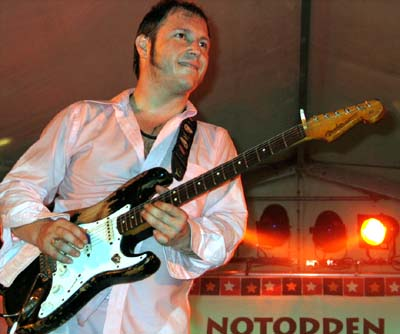
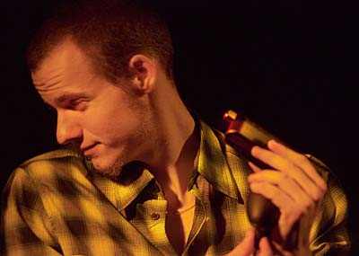

В 20-х числах апреля в Москве и Владимире пройдет серия клубных концертов норвежского блюзового гитариста Видара Бюска (Vidar Busk). Бюск - легендарная фигура, звезда первой величины и безусловный лидер скандинавского блюза. На родине у Бюска множество фанатичных поклонников, которые без разбору ездят за ним по стране, стараясь не пропустить ни одного выступления, пребывая в восторге от всего, что бы он ни делал.В Норвегии Бюск сыграл важнейшую роль в приобщении широких масс населения к блюзовой музыке. Во многом благодаря тому, что Видар добился недостижимой для блюзовых музыкантов известности. За последние несколько лет он получил две норвежские премии Грэмми, а две неблюзовые пластинки Видара были проданы по небольшой Норвегии 100-тысячным тиражом. Если посчитать, то получается, что примерно у каждого 30-го жителя Норвегии есть пластинка Бюска.
При этом, для блюзового сообщества в Осло и узкого круга ценителей Бюск - один из главных норвежских блюзменов на сегодняшний день. Его музыка с одной стороны утонченна и рафинирована, с другой - доступна и кричаще эмоциональна. В свои 30 с лишним лет Бюск уже успел повлиять своим стилем на очень многих музыкантов-гитаристов, также ставших блюзовыми звездами.
Самое интересное в музыке Бюска - это смешение стилей, он не может долго оставаться в каких-либо ограничивающих его рамках, на каждой новой пластинке - новые стили и новое звучание. Норвежские любители блюза благосклонно относятся к метаниям Видара, которые заносят его порой далеко за рамки блюза, ибо все это - неотъемлемая часть его таланта. Несколько последних лет Бюск играл на два лагеря - записывал пластинки в поп-аранжировках, играя на концертах те же песни в жестком блюзовом звучании.

Новый 2005 год - переломная точка для блюзовых фэнов Видара. Ибо он объявил о полном (хотя, может, и временном) возврате к традиционной блюзовой стилистике. В группу вошел гармонист Эйрик Бергене (Eirik Bergene) - молодая кровь, горячий ценитель и мастер традиционного блюза. С этим дуэтом связаны очень большие ожидания, ибо Бюск и Эйрик способны заряжать друг друга блюзовой энергией.Блюзовый год для Бюска начался с выхода диска крепчайшего гитарного блюза " Guitarmageddon", записанного вместе с великолепным Кидом Андерсеном и звездой американского вест-коаст блюза - Джуниором Ватсоном. Диск был недавно презентован в Калифорнии и в Осло, а через месяц доедет и до Москвы вместе с его соавтором.
Бюск запомнился московской публике своими концертами в 2002 году, слухи о предстоящих гастролях уже сопровождаются большим ажиотажем. Эйрик был в России дважды - со своей группой и в составе шоу 3-х гармонистов "Blues Harp Melt Down". В апреле c Бюском нас посетят бассист Bill Troiani ("Muddy Waters" club house band, "Eirik Bergene Band") и ударник Frode Storvik ("Hot Little Mama").
Концерты пройдут в сравнительно небольших клубах, где можно будет возродить настоящую блюзовую атмосферу. Знающие Видара фэны из Осло говорят, что он особенно хорош в маленьких клубах, а не на больших площадках. Это могут с уверенностью подтвердить и сотрудники blues.ru, имевшие удовольствие присутствовать на клубных концертах Бюска.
Под видом непроверенных слухов говорят, что в Москве на концертах будет записано несколько песен, которые могут войти в очередной 6-й блюзовый альбом Бюска.
Гастроли организованы blues.ru и norge.ru при поддержке Посольства Норвегии, и приурочены к 100-летию Российско-Норвежских связей, установленных, когда Россия стала первым государством, признавшим независимость Норвегии.
Расписание тура:
Отправляясь майским вечером 2002-го года в клуб "БиБиКинг" на концерт Видара Бюска, я представить не мог, что увиденное и услышанное настолько круто перевернет мое представление о блюзовой гитарной игре. В тот вечер я впервые видел, как эмоциональная импровизация, утонченная и взвешенная фразировка, стилистические комбинации, ироничная легкость подачи ТАК ОРГАНИЧНО сплетаются воедино. Бюск - гений! Добавить к этому мне нечего.
Алексей Барышев, «Blackmailers Blues Band»
Видар Бюск - совершенно экстраординарный музыкант, тонкий стилист и великолепный шоумен. В его уникальном стиле гармонично сочетаются блюз, рокабилли, свинг, рок и серф. Побывав на его концертах, я получил незабываемые ощущения и огромный творческий импульс.
Арсен Шомахов, группа «Регтайм»
Тяжело на словах объяснить, чем меня, например, так сильно поражает Видар Бюск, но он очень легко общается с музыкой, он очень точно чувствует публику, чувствует музыкальное напряжение и может держать его вечно. Переживать каждую ноту, но никогда не срываться эмоционально - это просто невероятно.
Владимир Русинов, «Louisiana Jumpin' Cats»
Первое, что меня поразило, когда я услышал Бюска, - это то, насколько норвежский музыкант звучит по-американски. Каждый из его дисков звучит по-разному, но всегда стильно, со знанием этой музыки, изобретательно и, в то же время, в рамках самых разных жанров американской музыки. Было очень приятно, что со всем этим согласен еще один из моих кумиров - Charlie Baty, который сказал мне, что знает Видара и очень уважает его как музыканта.
Вадим Иващенко, «Mishouris & His Orchestra»
Этот музыкант не просто играет, он этим дышит. Отличный стиль! В его исполнении многие вещи звучат по-новому. Все очень легко и мощно. И никаких гвоздей ;)
Владимир Демьянов, «Blues Doctors»
Дуууууууууууууууууууууууууууууууууууууууууууууууууууууууууууууууууууууууууууууууууууурь!!! ;)
Дмитрий Красивов, «Серебряный Рубль»
В первый раз Бюска я услышал на концерте в 1998 году, когда впервые приехал на Notodden Blues Festival. Видар был в расцвете блюзовых сил, его гитарный стиль был абсолютно необычен для меня, сам Бюск в качестве музыканта на сцене был удивительно совершенен во всех отношениях. Желание послушать Бюска еще составляло для меня половину мотивации к тому, чтобы ездить в Норвегию на фестиваль каждое лето. Его музыка очень сильно повлияла на то, что я играю на гитаре и слушаю на пластинках. Бюск, которого иногда называют Mr.Sugar, умеет 100%-точно выражать человеческие эмоции музыкальным языком, играя в диапазоне от беззаботных сладко-красивых вещей до лирично-грустных или же кричаще-эмоциональных.
Федор Романенко, blues.ru
От себя могу добавить, что он - виртуоз-скорострел. Сам маленького роста, при этом море энергии и ураганная гитара. Я его в клубе слушал - он играл 3 часа 20 минут без антракта! В конце концов его менеджер утащил у него микрофон, а Бюска это не остановило, он продолжал играть. Со сцены его стащили насильно! :) Впечатление было, что он еще часок поиграл бы легко!
Музыкант он - не только блюзовый. Блюз, рокабилли, джаз, чуть поп-рока... Все, что угодно - лишь бы было пространство для улетной гитарной импровизации. Он играет с выдающимся мастерством и заразительной энергией.
Андрей Евдокимов, «Весь Этот Блюз», blues.ru